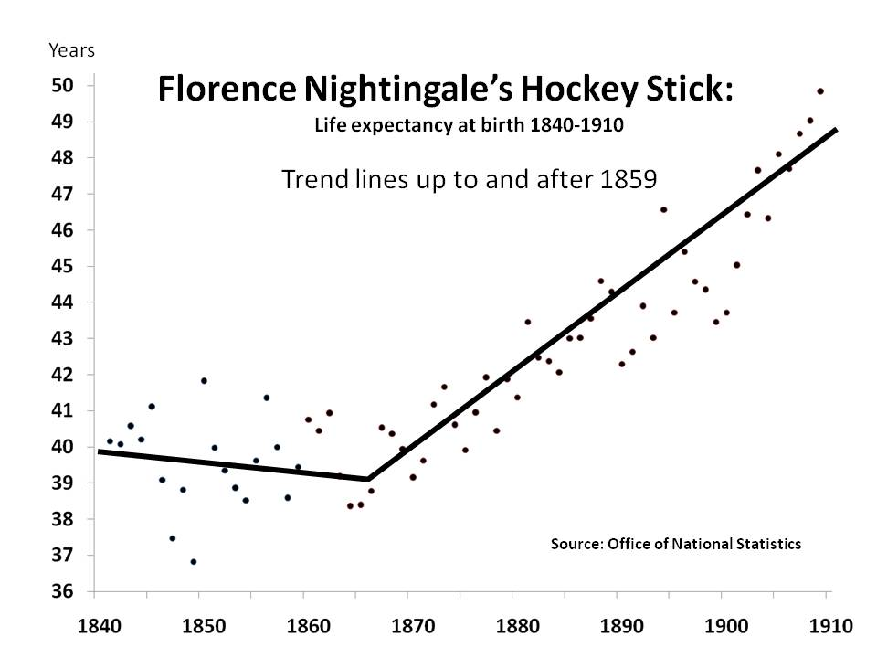
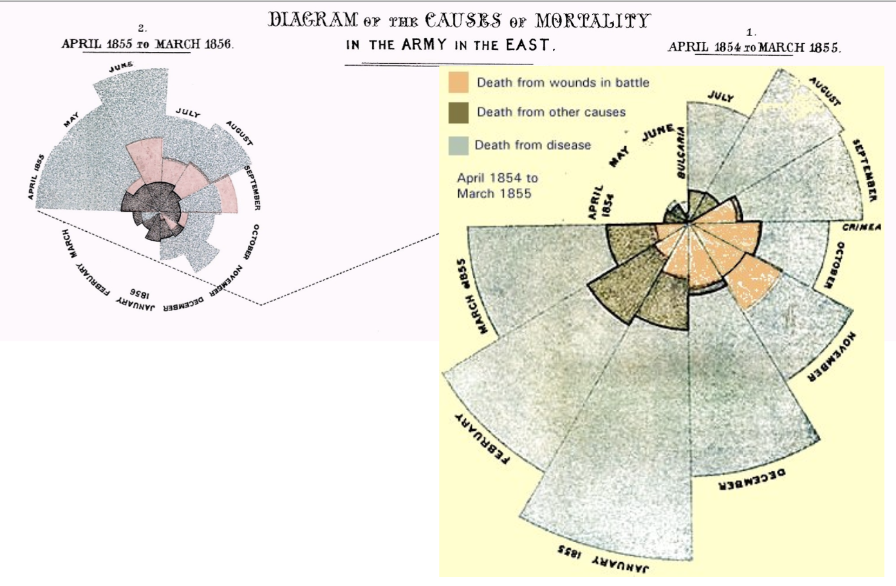
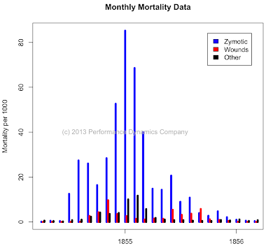
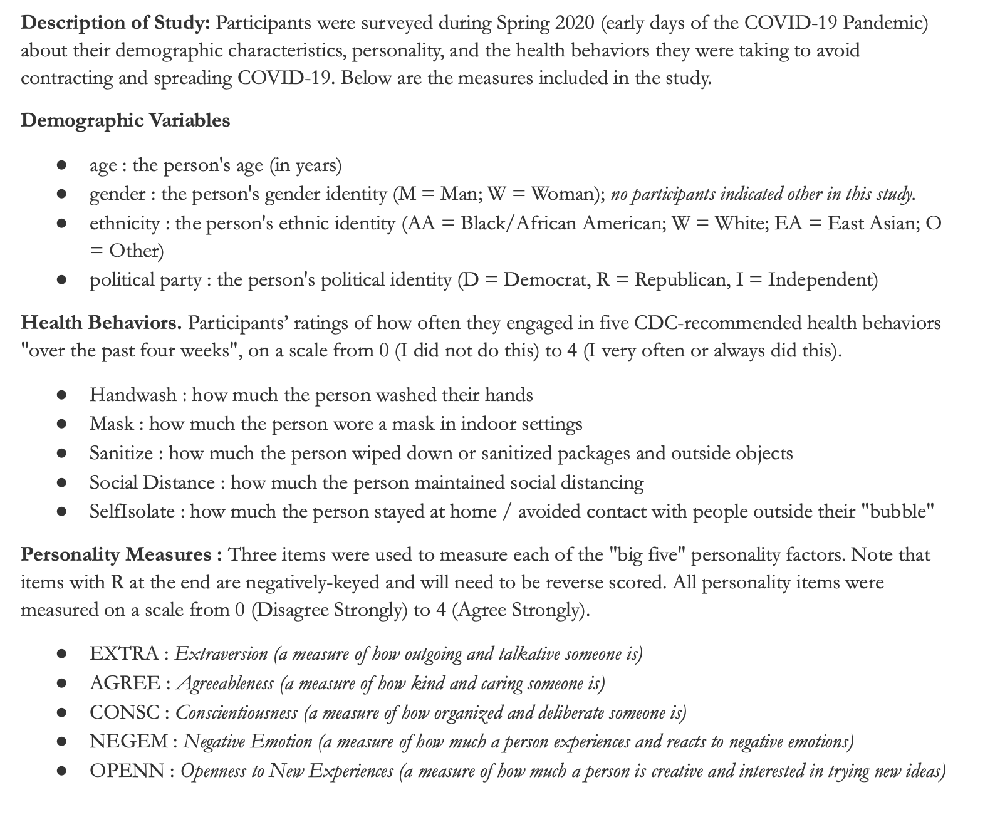
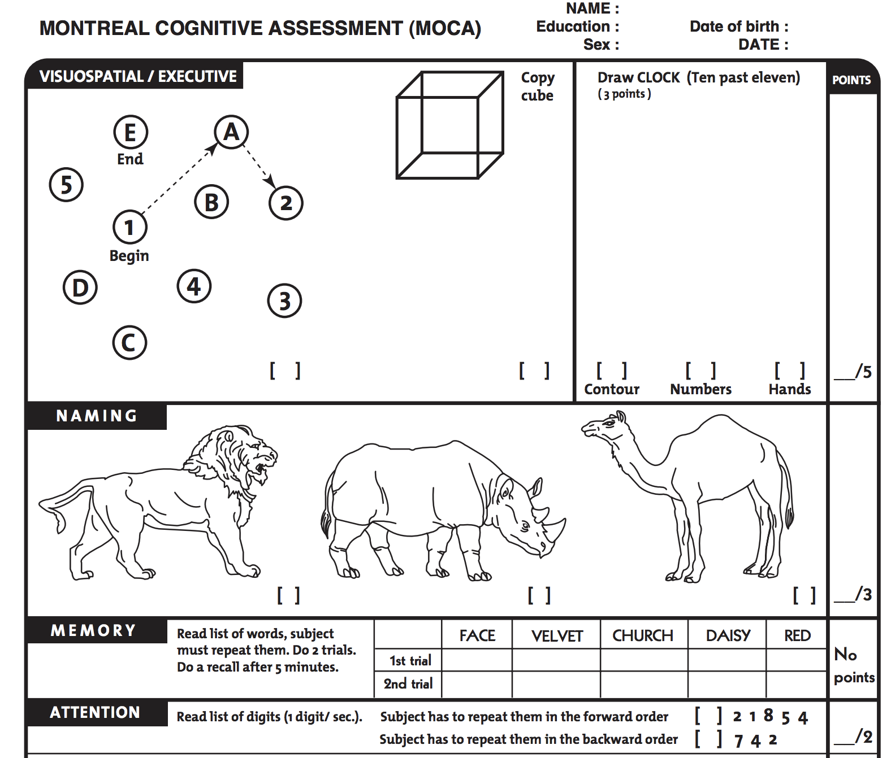

hist(d$SELFES, col = 'black', bor = 'white',
main = "Histogram of Self-Esteem",
xlab = "Self-Esteem Score", breaks = 15)
Welcome Back! Access this Document Here :
PLEASE COMPLETE THIS CHECK-IN : tinyurl.com/againmodels
|  |
Look at the graph below, and use it to answer the following questions.

What is better about the way the barchart1 visualizes these data?
What is worse (or still confusing)?

Below are some data that I graphed2. Take 1-2 minutes and SILENTLY (on your own) think about what you learn about the variable from this graph. Avoid FANCY STATS LANGUAGE - just explain the main ideas without those labels for now.
hist(d$SELFES, col = 'black', bor = 'white',
main = "Histogram of Self-Esteem",
xlab = "Self-Esteem Score", breaks = 15)
Things We Learned From the Graph
Things We Cannot Learn From the Graph
Look over the codebook (below).
What is one variable from the dataset that is interesting to you (if any)?
Is this categorical or numeric data?
What predictions do you have about this variable?
How might you use this variable in a linear model (as a DV or as a IV?)
Loading Data Issues :
rename this to something short!
posit.cloud : clicking on the name to load (vs. the “Import Dataset”)
Link to Data (also on bCourses)

Things we will do.
Open up Lab 2
Create an RScript
Load the Covid-19 Behavior Dataset (.csv file) and the CODE BOOK (.pdf)
the CODEBOOK explains what the variables measured
the .csv data file contains the data.
Make sure the data loaded correctly into R
Graph some variables and learn about the individuals from this graph
numeric data
categorical data
Save your work for Lab 2, Questions 1 and 2 and 3. Yeah!
List
Goes
Here
KEY IDEA : the way a variable is measured is CRITICAL.

Check-in :tinyurl.com/dudesinterrupting
Count the number of interruptions in the video (which professor will play below).
Submit your answer, then wait for the letter of the day.
DISCUSSION TOPICS :
How do we OPERATIONALIZE an INTERRUPTION?
What PREDICTIONS can we make about counting interruptions a second time?